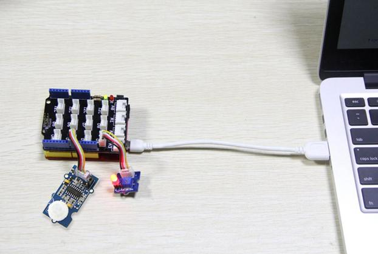
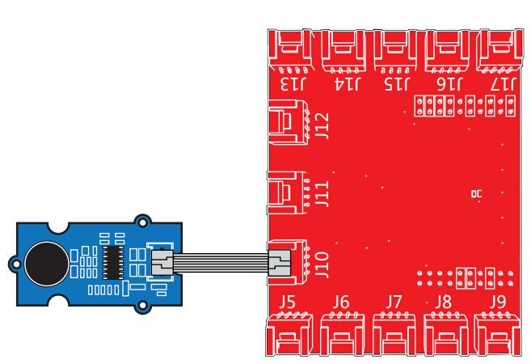

This is a simple to use PIR motion sensor with Grove compatible interface. This sensor allows you to sense motion, usually human movement in its range. Simply connect it to Grove - Base shield and program it, when anyone moves in its detecting range, the sensor will output HIGH on its SIG pin.

| Parameter | Value/Range |
|---|---|
| Operating Voltage | 3V–5V |
| Operating Current(VCC = 3V) | 100uA |
| Operating Current(VCC = 5V) | 150uA |
| Measuring Range | 0.1 - 6m |
| Default detecting distance | 3m |
| Holding Time | 1 - 25s |
| Working Wave Length | 7 - 14um |
| Detecting Angle | 120 degrees |
Following documents help in getting the user started with Grove.
The following sketch demonstrates a simple application of sensing motion. When someone moves in its detecting range, it will output High through its SIG pin and the LED will light. Otherwise, it will output LOW. Then you can use it to detect the motion of people.
| Base Shield | Grove module |
|---|---|
| D2 | Grove - PIR Motion Sensor |
| D4 | Grove - LED |

/*macro definitions of PIR motion sensor pin and LED pin*/ #define PIR_MOTION_SENSOR 2//Use pin 2 to receive the signal from the module #define LED 4//the Grove - LED is connected to D4 of Arduino void setup() { pinsInit(); } void loop() { if(isPeopleDetected())//if it detects the moving people? turnOnLED(); else turnOffLED(); } void pinsInit() { pinMode(PIR_MOTION_SENSOR, INPUT); pinMode(LED,OUTPUT); } void turnOnLED() { digitalWrite(LED,HIGH); } void turnOffLED() { digitalWrite(LED,LOW); } /***************************************************************/ /*Function: Detect whether anyone moves in it's detecting range*/ /*Return:-boolean, true is someone detected.*/ boolean isPeopleDetected() { int sensorValue = digitalRead(PIR_MOTION_SENSOR); if(sensorValue == HIGH)//if the sensor value is HIGH? { return true;//yes,return true } else { return false;//no,return false } }
Note: The detecting distance and holding time can be adjusted by adding two extra potentiometers on board. For the details please refer to the V1.2 Eagle below. The module can also be set as retriggerable or un- retriggerable by changing the jumper hat.
Is Anybody here (PIR Motion Sensor)

/* Grove-PIR-Motion-Sensor The following sketch demonstrates a simple application of sensing motion. When someone moves in its detecting range, it will output High through its SIG pin and the LED will light. Otherwise, it will output LOW. Then you can use it to detect the motion of people. The circuit: * sig pin of the Grove-PIR-Motion-Sensor to pin39 (J14 plug on Grove Base BoosterPack) * one side pin (either one) to ground * the other side pin to +VCC * LED anode (long leg) attached to RED_LED * LED cathode (short leg) attached to ground * Note: Position the trig jumper on N_Retrig to ensure This example code is in the public domain. http://www.seeedstudio.com/wiki/index.php?title=Twig_-_PIR_Motion_Sensor */ /* Macro Define */ #define PIR_MOTION_SENSOR 39 /* sig pin of the PIR sensor */ #define LED RED_LED /* led */ #define ON HIGH /* led on */ #define OFF LOW /* led off */ #define _handle_led(x) digitalWrite(LED, x) /* handle led */ /* the setup() method runs once, when the sketch starts */ void setup() { pinMode(PIR_MOTION_SENSOR, INPUT); /* declare the sig pin as an INPUT */ pinMode(RED_LED, OUTPUT); /* declare the red_led pin as an OUTPUT */ _handle_led(OFF); } /* the loop() method runs over and over again */ void loop() { if(isPeopleDetected()) { _handle_led(ON); /* if we detect a people, turn on the led */ } else { _handle_led(OFF); /* found nobody, turn off the light */ } } /* judge if there is a people around */ boolean isPeopleDetected() { int sensor_val = digitalRead(PIR_MOTION_SENSOR); /* read sig pin */ if(HIGH == sensor_val) { return true; /* people detected */ } else { return false; /* people un-detected */ } }
1.You should have a Raspberry Pi and a GrovePi or GrovePi+.
2. If the development environment is not configured, kindly follow here.
3.Connection
4.Navigate to the demos' directory:
cd yourpath/GrovePi/Software/Python/
nano grove_pir_motion_sensor.py # "Ctrl+x" to exit #
import time import grovepi # Connect the Grove PIR Motion Sensor to digital port D8 # SIG,NC,VCC,GND pir_sensor = 8 grovepi.pinMode(pir_sensor,"INPUT") while True: try: # Sense motion, usually human, within the target range if grovepi.digitalRead(pir_sensor): print 'Motion Detected' else: print '-' # if your hold time is less than this, you might not see as many detections time.sleep(.2) except IOError: print "Error"
5.Run the demo.
sudo python grove_pir_motion_sensor.py